书评
-
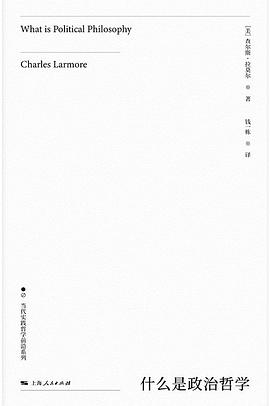
如果我们都没有错，为什么还是无法达成共识？
三十多年前，“魔岩三杰”之一的何勇在经典的《钟鼓楼》中向我们描绘了一个“你的声音我听不见，现在是太吵太乱”的世界。在这个世界中，我们似乎面对着无边无际的深刻问题与无穷无尽的正确答案；我…
书评 -
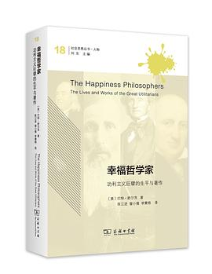
一个人的自私自利，为何最终会通向多数人的幸福？
狄更斯在自己的名作《艰难时世》中虚构了一位名为格雷戈林的主人公。他的口袋里经常装着一把尺子、一台天平秤、一张乘法表，随时准备称量一下人性的任何部分。他在国会中工作，却认为自己的任务不过…
书评 -
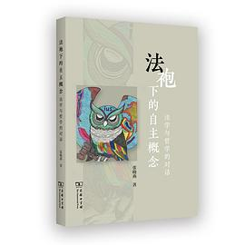
为什么说法律不仅是底线，也是思考正义的起点？
当一切坚固的都烟消云散，当一切神圣的都已被亵渎，面对卡夫卡式的世界，我们是否只有收起一切庄严肃穆，才不会永久地徘徊在法律门前，才会觅得百般寻找的城堡？倘若果真如此，我们如何理解彼此互嵌…
书评 -
赵英男评《荒野中的哲学家》|与万物一起生长
据说，叶卡捷琳娜大帝曾在写给法国启蒙哲学家狄德罗的一封信中提到：“你们哲学家是幸运的。你们在纸上书写，纸便承受着。但我是一个不幸的君主，承受我写作的是众生敏感的肌肤。”（引自David…
书评 -
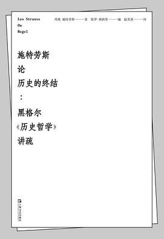
赵英男评《施特劳斯论历史的终结》|当密涅瓦的猫头鹰在黄昏起飞
1949年，离开德国17年的政治哲学家列奥·施特劳斯（Leo Strauss, 1899-1973）终于成为了芝加哥大学的政治科学教授。此后直至1969年的20年里，他以《自然权利与历…
书评 -
当法律可以私人定制
走进餐馆，我们总会期待可以选择心仪的菜品。走进商店，我们总会期待可以买到合身的服饰。走进医院，我们总会期待可以得到独特的治疗。走进学校，我们总会期待可以获得个性化的培养。的确，我们没有…
书评 -
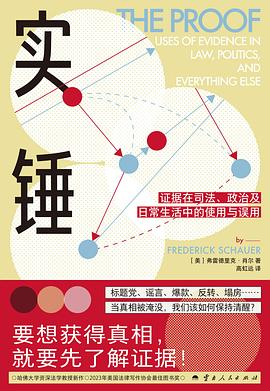
信息纷繁的时代，我们还能相信什么？
阿姆斯特朗是否真的登上过月球？一场肆虐全球的疾病究竟来自何处？养生大师究竟不幸逝世还是假死遁世完成惊世之作？热搜上的明星八卦是确有其事还是在转移视线？晚上一杯牛奶真的有助于睡眠？黄桃罐…
书评 -
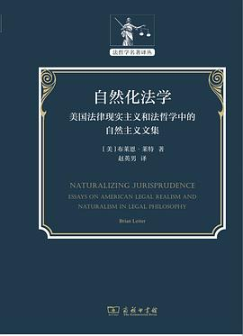
布莱恩·莱特谈尼采与自然主义法理学
法律现实主义是20世纪法律实践与法学研究中的重要思潮。但在相关研究中，这一思潮即便不是被法学家与哲学家们抛诸脑后，也是冷眼视之。近日，国际知名法理学家和尼采研究专家、美国芝加哥大学法学…
书评 -
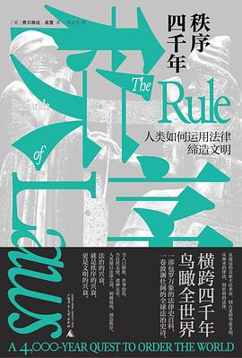
巨变面前，法律可以做什么？
我们为什么需要法律？这似乎是一个无需回答的问题。法律能够定纷止争，是我们每一个人的思想与行为的边界，是我们能够彼此大致相安无事地同处一个世界的可靠保证。但法律的价值是否仅止于此？在法学…
书评 -
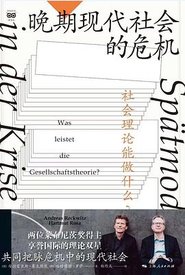
“失落年代”社会理论家的迷惘
观察如今的学术话语，不难发现我们已经身处一个失落了宏大理论的年代。我们固然仍在不遗余力地赞美着理论，孜孜不倦地渴求着理论，但却几乎不再会认真对待理论。抽象、晦涩与枯燥，似乎成为了理论的…
书评 -

赵英男读詹姆斯·斯科特：“活着为了讲述”
当一位社会科学家站在我们面前，我们想象得到他的模样吗？在我们的脑海中，他是否神采奕奕、口若悬河，有一套判定我们观点是非对错的标准？他是否西装领带、举止优雅，有一堆我们做梦也没遇见过的名…
书评 -
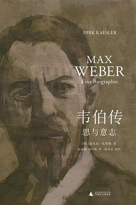
赵英男读《韦伯传》|举起时代的重负，掷入心灵的深谷
2020年6月17日，是我博士生活结束后的第一天。迟来的清晨，仿佛让“恶战苦斗”般的生活暂时告一段落。时光倒流一百年，在1920年的6月17日这一天，同样有一个人感受到了人生中这种久违…
书评 -

布莱恩·塔玛纳哈谈法律多元主义与法理学
法律秩序的多样性遍及我们考察的每一个社会领域。国家法、国际法、跨国法、习惯法、宗教法、原住民法等多重法律形态的彼此共存，亦即法律多元主义（legal pluralism）现象，是人类社…
书评 -
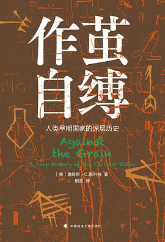
国家的兴起与政治哲学的要义
对于中文读者来说，耶鲁大学教授詹姆斯·斯科特（James Scott）并不是一个陌生的名字。他的著作《农民的道义经济学》（The Moral Economy of the Peasan…
书评 -

约瑟夫·拉兹与法哲学的战国时代
2022年5月2日，国际著名法哲学家约瑟夫·拉兹（Joseph Raz, 1939-2022）于英国伦敦逝世。至此，影响20世纪60年代以来英美法哲学发展的三位重要学者——另两位是赫伯…
书评 -
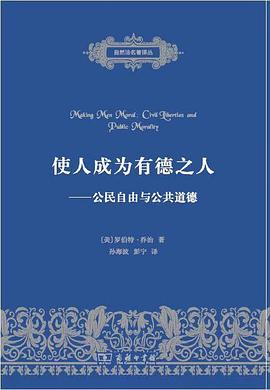
《成人以德》：法律会让我们更道德吗？
“大学之道，在明明德，在亲民，在止于至善”。成为一个有德之人，不仅是我们每个人的自我期许，更是这个我们赖以生活的世界中根深蒂固的价值。可惜生活中我们往往不能如愿。当老人抱着孩子走进通勤…
书评 -
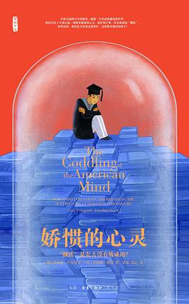
赵英男评《娇惯的心灵》|我们的教育为何不奏效？
“如今我走到人生十字路口，我总知道哪条路是对的，毫无例外，我知道。但我从来不走。为什么？因为它太难了。”这是讨论教育理念的著名影片《闻香识女人》中的一句经典台词。如果说它在当年只是助力…
书评 -
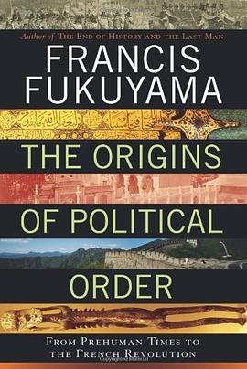
重读福山：政治秩序衰败中的制度与人心
我们已然步入21世纪的第三个十年，但世界上的局部战事、地缘冲突、宗教纷争、种族矛盾以及自然灾害却一如往昔。此时的我们即便手握自己都为之感到兴奋和颤栗的全新科技，却对自己现在身处何处、将…
书评
评论